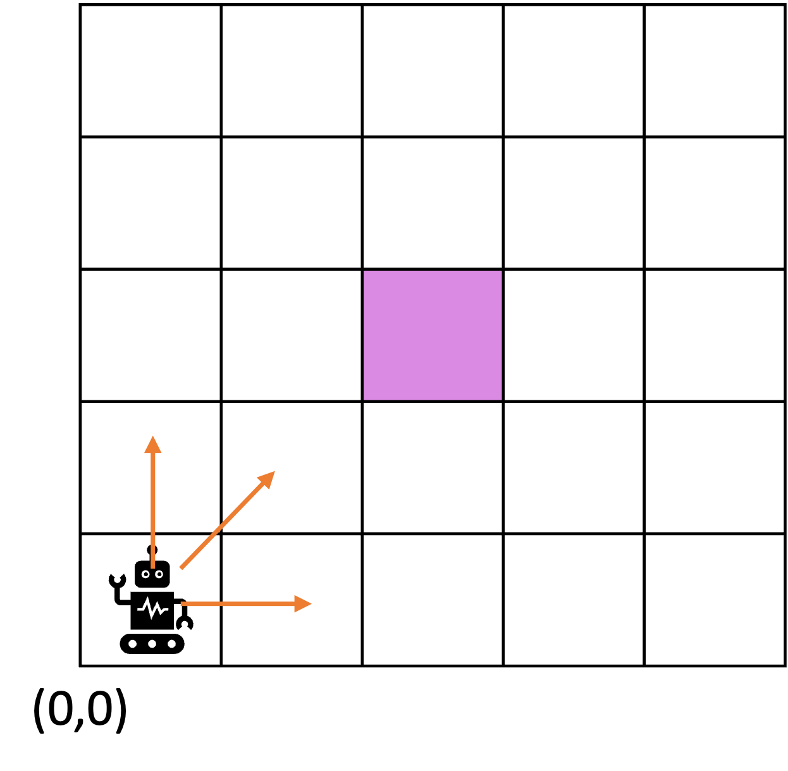
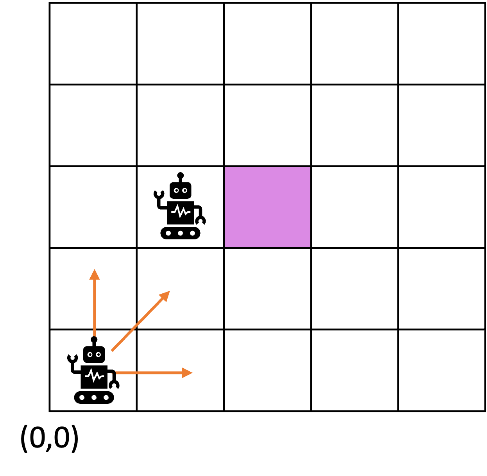
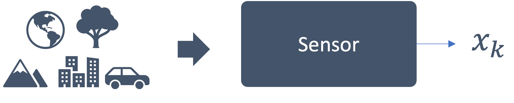
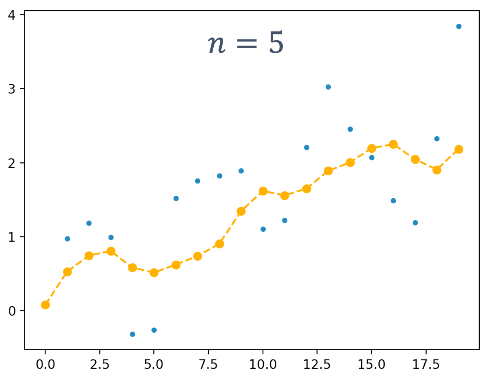
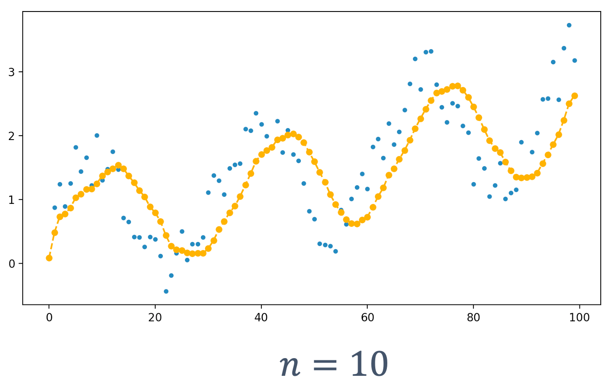
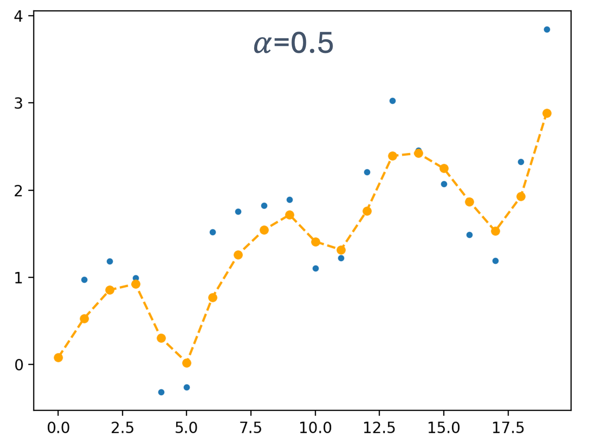

# EKF ## **Design of Autonomous Systems** ### csci 6907/4907-Section 86 ### Prof. **Sibin Mohan** --- consider a robot in a simple grid --- consider a robot in a simple grid starting at $(0,0)$ --- consider a robot in a simple grid <img src="img/ekf/robot_grid.2.png" width="700"> starting at $(0,0)$ → heading towards $(2,2)$ --- robot can take multiple paths to get to its destination  --- assume that it follows one of these paths and ends up at:  --- assume that it follows one of these paths and ends up at: <img src="img/ekf/robot_grid.5.png" width="700"> clearly this is not the intended goal! --- what now? --- what now? 1. robot → understand and estimate where it is _right now_ - _i.e.,_ **estimate its current state** --- what now? 1. robot → understand and estimate where it is _right now_ - _i.e.,_ **estimate its current state** 2. robot → make a **decision** - based on its current state → where to head **next** --- how? --- how? ### **[state estimation](#state-estimation)** --- but first → _how did we end up here in spite of onboard sensors?_ --- but first → _how did we end up here in spite of onboard sensors?_ sensor gave us a value, $x_k$ --- sensor gave us a value, $x_k$ - we can't trust it as is --- sensor gave us a value, $x_k$ - we can't trust it as is - sensors are **imperfect** --- sensors are **imperfect** - physical limitations --- sensors are **imperfect** - physical limitations - measurement noise --- sensors are **imperfect** - physical limitations - measurement noise - poor calibrations, etc. --- sensors are **imperfect** - physical limitations - measurement noise - poor calibrations, etc. - errors can’t be zero --- sensors are **imperfect** - physical limitations - measurement noise - poor calibrations, etc. - errors can’t be zero - $error = observation\ –\ true value$ --- "**filter**" out noisy data → only allow correct data to guide us <img src="img/ekf/robot_grid.7.png" width="700"> --- "**filter**" out noisy data → only allow correct data to guide us our robot → pick the right direction to its _correct_ destination <img src="img/ekf/robot_grid.8.png" width="700"> --- <img src="img/ekf/robot_grid.8.png" width="700"> <img src="img/ekf/robot_grid.9.png" width="700"> --- ## State Estimation a **fundamental problem** in control theory, robotics and signal processing --- ## State Estimation determining **state of dynamic system** from **noisy/incomplete measurements** --- in context of dynamic systems, "**state**", > a set of variables that completely describe the system at a given time --- | **system** | **state variables** | |------------|----------------------| | **moving vehicle** | position, velocity, acceleration | | **pendulum** | angle, angular velocity | | **financial system** | asset prices, market indicators | || --- ### state → **evolves over time** --- ### state → **evolves over time** - according to system dynamics --- ### state → **evolves over time** - according to system dynamics - described by a **state transition model** --- ### How to Estimate State? --- ### How to Estimate State?  --- ### How to Estimate State? --- ### How to Estimate State? <img src="img/ekf/sensor_state.3.png" width="1100"> --- ### How to Estimate State? let's look at some data: --- <!-- .slide: data-background="white" --> ### How to Estimate State? let's look at some data: <img src="img/ekf/noisy_data.1.png" width="900"> --- <!-- .slide: data-background="white" --> ### How to Estimate State? <img src="img/ekf/noisy_data.1.png" width="900"> from sensor reading ($x_k$) → how to generate state _estimate_, $\overline{x_k}$? --- <!-- .slide: data-background="white" --> what if we have a few more values? <img src="img/ekf/noisy_data.2.png" width="900"> --- <!-- .slide: data-background="white" --> what if we have a few more values? <img src="img/ekf/noisy_data.2.png" width="500"> <img src="img/ekf/noisy_data.3.png" width="900"> --- <!-- .slide: data-background="white" --> do we see a trend? What if we had many more values? <img src="img/ekf/noisy_data.2.png" width="300"> <img src="img/ekf/noisy_data.3.png" width="300"> <img src="img/ekf/noisy_data.4.png" width="900"> --- best way to capture behavior? --- <!-- .slide: data-background="white" --> best way to capture behavior? <img src="img/ekf/noisy_data.4.png" width="900"> data is "noisy" → doesn't follow an "exact" trend --- Remember that $\overline{x_k}$ is the estimate we want: <img src="img/ekf/sensor_state.3.png" width="1100"> --- one way to compute $\overline{x_k}$ → **average** --- one way to compute $\overline{x_k}$ → **average** of a **running window of samples** --- ### moving average (MA) --- why "window" and not all the samples? --- we may only care about most recent <scb>n</scb> values Note: anything older and it may not be directly applicable to our current situation. --- compute **moving average** as follows: $$ \overline{x_{k}}=\frac{x_{k-n-1}+\cdots+x_{k-1}+x_{k}}{n} $$ --- compute **moving average** as follows: $$ \overline{x_{k}}=\frac{x_{k-n-1}+\cdots+x_{k-1}+x_{k}}{n} $$ <br> where $n$ → **window size** --- consider following data: | $k$ | $x_k$ | | --- | --- | | 0 | 0.08187 | | 1 | 0.97601 | | 2 | 1.18350 | --- using the MA method ($n=3$), | $k$ | $x_k$ | $\overline{x_{k}}$ | | --- | --- | --- | | 0 | 0.08187 | 0.08187 | | 1 | 0.97601 | 0.52894 | | 2 | 1.18350 | 0.74713 | --- <!-- .slide: data-background="white" --> using the MA method ($n=3$), <div class="multicolumn"> <div> | $k$ | $x_k$ | $\overline{x_{k}}$ | | --- | --- | --- | | 0 | 0.08187 | 0.08187 | | 1 | 0.97601 | 0.52894 | | 2 | 1.18350 | 0.74713 | </div> <div> <img src="img/ekf/average_window.1.png" width="600"> </div> </div> --- more values → window moves, aggregating groups of values: | $k$ | $x_k$ | $\overline{x_{k}}$ | | --- | --- | --- | | 0 | 0.08187 | 0.08187 | | 1 | 0.97601 | 0.52894 | | 2 | 1.18350 | 0.74713 | | 3 | 0.99502 | 1.05151 | --- <!-- .slide: data-background="white" --> more values → window moves, aggregating groups of values: <div class="multicolumn"> <div> | $k$ | $x_k$ | $\overline{x_{k}}$ | | --- | --- | --- | | 0 | 0.08187 | 0.08187 | | 1 | 0.97601 | 0.52894 | | 2 | 1.18350 | 0.74713 | | 3 | 0.99502 | 1.05151 | </div> <div> <img src="img/ekf/average_window.2.png" width="600"> </div> </div> --- <!-- .slide: data-background="white" --> <div class="multicolumn"> <div> | $k$ | $x_k$ | $\overline{x_{k}}$ | | --- | --- | --- | | 0 | 0.08187 | 0.08187 | | 1 | 0.97601 | 0.52894 | | 2 | 1.18350 | 0.74713 | | 3 | 0.99502 | 1.05151 | | 4 | -0.31375 | 0.62159 | | 5 | -0.25739 | 0.14129 | | 6 | 1.52112 | 0.31666 | </div> <div> <br> <img src="img/ekf/average_window.3.png" width="900"> </div> </div> --- **estimate** → trying to **match** changes in original sensor readings --- <!-- .slide: data-background="white" --> finally, we get: <div class="multicolumn"> <div> <font size="5"> | $k$ | $x_k$ | $\overline{x_{k}}$ | | --- | --- | --- | | 0 | 0.08187 | 0.08187 | | 1 | 0.97601 | 0.52894 | | 2 | 1.18350 | 0.74713 | | 3 | 0.99502 | 1.05151 | | 4 | -0.31375 | 0.62159 | | 5 | -0.25739 | 0.14129 | | 6 | 1.52112 | 0.31666 | | 7 | 1.75454 | 1.00609 | | 8 | 1.82412 | 1.69993 | | 9 | 1.89229 | 1.82365 | | 10 | 1.10513 | 1.60718 | | 11 | 1.22321 | 1.40688 | | 12 | 2.20793 | 1.51209 | | 13 | 3.02390 | 2.15168 | | 14 | 2.45511 | 2.56231 | | 15 | 2.07442 | 2.51781 | | 16 | 1.49280 | 2.00744 | | 17 | 1.19093 | 1.58605 | | 18 | 2.32653 | 1.67009 | | 19 | 3.84177 | 2.45308 | </small> </div> <div> <br> <br> <img src="img/ekf/average_window.4.png" width="900"> </div> </div> --- a good start, but let's consider a few changes... --- <!-- .slide: data-background="white" --> what happens with **changing** window size? consider $n=4$ or $n=9$ <img src="img/ekf/average_window.5.png" width="900"> --- some **properties** → correlate with **larger window size** |property | effect (larger $n$) | |---------|--------| | smoothening | more/less?| | sensitivity (to changes) | more/less? | || Note: - why do these matter? - these properties can significantly affect the **response** for the system → whether it is jerky or sudden vs. a better, albeit slower, response. Also, the sensitivity tells us that the system doesn't respond easily to big changes in output, thus increasing inertia! --- consider a few examples --- <!-- .slide: data-background="white" --> consider a few examples <img src="img/ekf/average_window.6.png" width="950"> --- <!-- .slide: data-background="white" --> consider a few examples <img src="img/ekf/average_window.6.png" width="350">  --- <!-- .slide: data-background="white" --> consider a few examples <img src="img/ekf/average_window.6.png" width="350"> <img src="img/ekf/average_window.8.png" width="950"> --- <!-- .slide: data-background="white" --> consider a few examples <img src="img/ekf/average_window.6.png" width="250"> <img src="img/ekf/average_window.8.png" width="250"> <img src="img/ekf/average_window.9.png" width="950"> --- <!-- .slide: data-background="white" --> consider a few examples <img src="img/ekf/average_window.6.png" width="450"> <img src="img/ekf/average_window.8.png" width="450"> <img src="img/ekf/average_window.9.png" width="450"> --- <!-- .slide: data-background="white" --> <img src="img/ekf/average_window.6.png" width="450"> <img src="img/ekf/average_window.8.png" width="450"> <img src="img/ekf/average_window.9.png" width="450"> |property | effect (larger $n$) | |---------|--------| | smoothening | more/less?| | sensitivity (to changes) | more/less? | || --- <!-- .slide: data-background="white" --> <img src="img/ekf/average_window.6.png" width="450"> <img src="img/ekf/average_window.8.png" width="450"> <img src="img/ekf/average_window.9.png" width="450"> |property | effect (larger $n$) | |---------|--------| | smoothening | **more**| | sensitivity (to changes) | more/less? | || --- <!-- .slide: data-background="white" --> <img src="img/ekf/average_window.6.png" width="450"> <img src="img/ekf/average_window.8.png" width="450"> <img src="img/ekf/average_window.9.png" width="450"> |property | effect (larger $n$) | |---------|--------| | smoothening | **more**| | sensitivity (to changes) | **less** | || --- **delays** → window size affects how delayed the estimate is? --- <!-- .slide: data-background="white" --> **delays?** <img src="img/ekf/average_window.10.png" width="950"> --- <!-- .slide: data-background="white" --> **delays?** <img src="img/ekf/average_window.10.png" width="550">  --- <!-- .slide: data-background="white" --> **delays?** <img src="img/ekf/average_window.10.png" width="450"> <img src="img/ekf/average_window.12.png" width="950"> --- <!-- .slide: data-background="white" --> **delays?** <img src="img/ekf/average_window.10.png" width="600"> <img src="img/ekf/average_window.12.png" width="600"> --- <!-- .slide: data-background="white" --> **delays?** <img src="img/ekf/average_window.10.png" width="600"> <img src="img/ekf/average_window.12.png" width="600"> |property | effect (larger $n$) | |---------|--------| | smoothening | **more**| | sensitivity (to changes) | **less** | | delays | more/less? | || --- <!-- .slide: data-background="white" --> **delays?** <img src="img/ekf/average_window.10.png" width="600"> <img src="img/ekf/average_window.12.png" width="600"> |property | effect (larger $n$) | |---------|--------| | smoothening | **more**| | sensitivity (to changes) | **less** | | delays | **more**| || --- with increased window sizes → delays **increase**! --- with increased window sizes → delays **increase**! **why** does this happen? --- ### issues with moving averages - less sensitive to changes - greater delays --- ### issues with moving averages - less sensitive to changes - greater delays - computationally **expensive** --- ## Exponential Moving Average (EMA) --- ## Exponential Moving Average (EMA) - more weights → **recent** data --- ## Exponential Moving Average (EMA) - more weights → **recent** data - prevent delays --- ## Exponential Moving Average (EMA) - more weights → **recent** data - prevent delays - better control over smoothing --- ## Exponential Moving Average (EMA) - more weights → **recent** data - prevent delays - better control over smoothing **exponentially decreasing weights over time** --- ## Exponential Moving Average (EMA) $$ \overline{x_{0}}=x_{0} $$ --- ## Exponential Moving Average (EMA) $$ \overline{x_{0}}=x_{0} $$ $$ \overline{x_{k}}=\alpha x_{k}+(1-\alpha) \overline{x_{k-1}}, k>0 $$ --- ## Exponential Moving Average (EMA) $$ \overline{x_{0}}=x_{0} $$ $$ \overline{x_{k}}=\alpha x_{k}+(1-\alpha) \overline{x_{k-1}}, k>0 $$ **$\alpha$** → **smoothing factor** ($0 < \alpha < 1$) --- Exampl ($\alpha = 0.75$): | $k$ | $x_{k}$ | $\overline{x_{k}}$ | | :---: | :---: | :---: | | 0 | 2.0 | 2.0000 | | 1 | 3.0 | 2.7000 | | 2 | 2.0 | 2.2100 | | 3 | 4.0 | 3.4630 | | 4 | 3.0 | 3.1389 | || --- one main advantages of EMA → **only need to store one value**, $\overline{x_{k}}$ --- why "exponential"? --- as we expand the term for $\overline{x_{k}}$ we see, --- as we expand the term for $\overline{x_{k}}$ we see, <br> <p align="left"> $ \overline{x_{k}} =\alpha x_{k}+(1-\alpha) \overline{x_{k-1}} $ </p> --- as we expand the term for $\overline{x_{k}}$ we see, <br> <p align="left"> $ \overline{x_{k}} =\alpha x_{k}+(1-\alpha) \overline{x_{k-1}} $ </p> <p align="left"> $ \overline{x_{k}} =\alpha x_{k}+\alpha(1-\alpha) x_{k-1}+(1-\alpha)^{2} \overline{x_{k-2}}$ </p> --- as we expand the term for $\overline{x_{k}}$ we see, <br> <p align="left"> $ \overline{x_{k}} =\alpha x_{k}+(1-\alpha) \overline{x_{k-1}} $ </p> <p align="left"> $ \overline{x_{k}} =\alpha x_{k}+\alpha(1-\alpha) x_{k-1}+(1-\alpha)^{2} \overline{x_{k-2}}$ </p> <p align="left"> $ \overline{x_{k}} =\alpha x_{k}+\alpha(1-\alpha) x_{k-1}+\alpha(1-\alpha)^{2} x_{k-2}+(1-\alpha)^{3} \overline{x_{k-3}}$ </p> --- as we expand the term for $\overline{x_{k}}$ we see, <br> <p align="left"> $ \overline{x_{k}} =\alpha x_{k}+(1-\alpha) \overline{x_{k-1}} $ </p> <p align="left"> $ \overline{x_{k}} =\alpha x_{k}+\alpha(1-\alpha) x_{k-1}+(1-\alpha)^{2} \overline{x_{k-2}}$ </p> <p align="left"> $ \overline{x_{k}} =\alpha x_{k}+\alpha(1-\alpha) x_{k-1}+\alpha(1-\alpha)^{2} x_{k-2}+(1-\alpha)^{3} \overline{x_{k-3}}$ </p> $ \vdots $ <p align="left"> $ \overline{x_{k}} =\alpha\left[x_{k}+(1-\alpha) x_{k-1}+(1-\alpha)^{2} x_{k-2}+(1-\alpha)^{3} x_{k-3} +\cdots+\\ \quad \quad(1-\alpha)^{k-1} x_{1}\right]+(1-\alpha)^{k} x_{0}$ </p> --- why "exponential"? <br> <p align="left"> $ \overline{x_{k}} =\alpha\left[x_{k}+(1-\alpha) x_{k-1}+(1-\alpha)^{2} x_{k-2}+(1-\alpha)^{3} x_{k-3} +\cdots+\\ \quad \quad(1-\alpha)^{k-1} x_{1}\right]+(1-\alpha)^{k} x_{0}$ </p> <br> effect of the smoothing factor, $\alpha$ applied **exponentially** with **each sensor reading** --- For various values of $\alpha$, $$ \alpha=0.3000 \\ $$ $$ \alpha(1-\alpha)=0.2100 \\ $$ $$ \alpha(1-\alpha)^{2}=0.1470 \\ $$ $$ \alpha(1-\alpha)^{3}=0.1029 \\ $$ $$ \vdots \\ $$ --- EMA → accounts for **all past data** --- EMA → accounts for **all past data** encodes it into a **single** value → $\overline{x_{k}}$ --- consider example where $\alpha=0.5$, | ${ }_{k}$ | $\chi_{k}$ | $\overline{\chi_{k}}$ | | ---: | :--- | :--- | | 0 | 0.08187 | 0.08187 | | 1 | 0.97601 | 0.52894 | | 2 | 1.18350 | 0.85622 | | 3 | 0.99502 | 0.92562 | | 4 | -0.31375 | 0.30594 | | 5 | -0.25739 | 0.02427 | | 6 | 1.52112 | 0.77269 | | 7 | 1.75454 | 1.26362 | --- consider example where $\alpha=0.5$, <font size="5"> | ${ }_{k}$ | $\chi_{k}$ | $\overline{\chi_{k}}$ | | ---: | :--- | :--- | | 0 | 0.08187 | 0.08187 | | 1 | 0.97601 | 0.52894 | | 2 | 1.18350 | 0.85622 | | 3 | 0.99502 | 0.92562 | | 4 | -0.31375 | 0.30594 | | 5 | -0.25739 | 0.02427 | | 6 | 1.52112 | 0.77269 | | 7 | 1.75454 | 1.26362 | | 8 | 1.82412 | 1.54387 | | 9 | 1.89229 | 1.71808 | | 10 | 1.10513 | 1.41161 | | 11 | 1.22321 | 1.31741 | | 12 | 2.20793 | 1.76267 | | 13 | 3.02390 | 2.39328 | | 14 | 2.45511 | 2.42420 | | 15 | 2.07442 | 2.24931 | | 16 | 1.49280 | 1.87105 | | 17 | 1.19093 | 1.53099 | | 18 | 2.32653 | 1.92876 | | 19 | 3.84177 | 2.88526 | || </font> --- <!-- .slide: data-background="white" --> consider example where $\alpha=0.5$, <div class="multicolumn"> <div> <font size="5"> | ${ }_{k}$ | $\chi_{k}$ | $\overline{\chi_{k}}$ | | ---: | :--- | :--- | | 0 | 0.08187 | 0.08187 | | 1 | 0.97601 | 0.52894 | | 2 | 1.18350 | 0.85622 | | 3 | 0.99502 | 0.92562 | | 4 | -0.31375 | 0.30594 | | 5 | -0.25739 | 0.02427 | | 6 | 1.52112 | 0.77269 | | 7 | 1.75454 | 1.26362 | | 8 | 1.82412 | 1.54387 | | 9 | 1.89229 | 1.71808 | | 10 | 1.10513 | 1.41161 | | 11 | 1.22321 | 1.31741 | | 12 | 2.20793 | 1.76267 | | 13 | 3.02390 | 2.39328 | | 14 | 2.45511 | 2.42420 | | 15 | 2.07442 | 2.24931 | | 16 | 1.49280 | 1.87105 | | 17 | 1.19093 | 1.53099 | | 18 | 2.32653 | 1.92876 | | 19 | 3.84177 | 2.88526 | || </font> </div> <div> <br> <img src="img/ekf/ema.1.png" width="900"> </div> </div> --- consider some of the values in the table: | ${ }_{k}$ | $\chi_{k}$ | $\overline{\chi_{k}}$ | | ---: | :--- | :--- | | 0 | 0.08187 | 0.08187 | | 1 | 0.97601 | 0.52894 | | 2 | 1.18350 | 0.85622 | | 3 | 0.99502 | **0.92562** | | 4 | **-0.31375** | **0.30594** | | 5 | -0.25739 | 0.02427 | | 6 | 1.52112 | 0.77269 | |...|...|...| || --- <!-- .slide: data-background="white" --> consider some of the values in the table: <div class="multicolumn"> <div> | ${ }_{k}$ | $\chi_{k}$ | $\overline{\chi_{k}}$ | | ---: | :--- | :--- | | 0 | 0.08187 | 0.08187 | | 1 | 0.97601 | 0.52894 | | 2 | 1.18350 | 0.85622 | | 3 | 0.99502 | **0.92562** | | 4 | **-0.31375** | **0.30594** | | 5 | -0.25739 | 0.02427 | | 6 | 1.52112 | 0.77269 | |...|...|...| || </div> <div> $\overline{x_{4}}=\textbf{0.5} x_{4} + \textbf{0.5} \overline{x_{3}}$ <img src="img/ekf/ema.3.png" width="900"> </div> </div> --- <!-- .slide: data-background="white" --> for $\alpha = 0.5$, the estimate → "**halfway**" between two sensor readings $\overline{x_{4}}=\textbf{0.5} x_{4} + \textbf{0.5} \overline{x_{3}}$ <img src="img/ekf/ema.3.png" width="900"> --- now, change $\alpha=\textbf{0.7}$ --- now, change $\alpha=\textbf{0.7}$ $\overline{x_{4}}=0.7 x_{4}+0.3 \overline{x_{3}}$ --- <!-- .slide: data-background="white" --> now, change $\alpha=\textbf{0.7}$ $\overline{x_{4}}=0.7 x_{4}+0.3 \overline{x_{3}}$ <img src="img/ekf/ema.4.png" width="900"> --- <!-- .slide: data-background="white" --> now, change $\alpha=\textbf{0.7}$ $\overline{x_{4}}=0.7 x_{4}+0.3 \overline{x_{3}}$ <img src="img/ekf/ema.4.png" width="900"> **heavier bias** towards the **more recent value** --- <!-- .slide: data-background="white" --> <img src="img/ekf/ema.5.png" width="700"> <img src="img/ekf/ema.6.png" width="700"> which one is $\alpha=\textbf{0.05}$ and which one is $\alpha=\textbf{0.95}$? --- <!-- .slide: data-background="white" --> significance of **changing $\alpha$** <img src="img/ekf/ema.7.png" width="700"> <img src="img/ekf/ema.8.png" width="700"> --- <!-- .slide: data-background="white" --> increasing $\alpha$ (left to right) results in: <img src="img/ekf/ema.9.png" width="500">  <img src="img/ekf/ema.11.png" width="500"> --- <!-- .slide: data-background="white" --> increasing $\alpha$ (left to right) results in: <img src="img/ekf/ema.9.png" width="500"> <img src="img/ekf/ema.11.png" width="500"> - **less delay** - **less smoothening out**